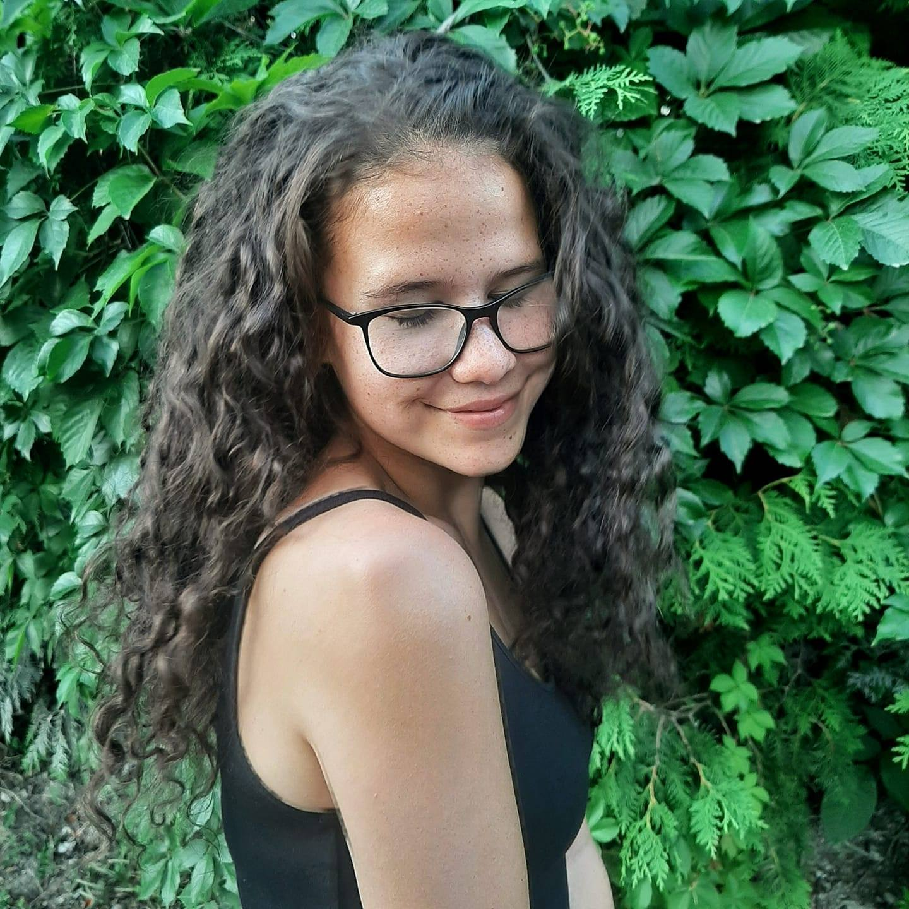

Portfólió

Csuka Csenge vagyok, 19 éves gólya a Budapesti Műszaki Egyetem Gépészmérnöki karán Ipari termék- és formatervező szakon. Az egyetem miatt költöztem fel Budapestre, előtte Pécsen éltem és tanultam. Első osztályos koromtól alapfokú művészeti iskolába is jártam általános iskola, majd gimnázium mellett. Ott szerettem meg a rajzolást, ami azóta is a hobbim. A rajz szeretete miatt jöttem erre a szakra és ezzel is szeretnék foglalkozni a jövőben.